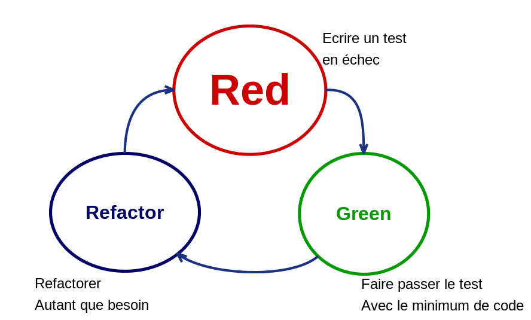

Test Driven Development
Novencia
Test Driven Development
TDD c'est quoi pour vous ?
Test Driven-Development:
Ron Jeffries
1 des trois fondateur de XP
Signataire manifest Agile
TDD, Pourquoi ?
Tests first
Confiance
Documentation
Design
Expérimentation
Harnais de sécurité
Guide
Test firsts : Reflection autour du test -> autour de la fonctionnalité
Confiance : dans le code écrit
Documentation : comment ça fonctionne
Design : Test compliqué -> design adapté ?
Expérimentation : comment ça réagi si -> nouveau test
Harnais : exécuté à la compilation -> je sais si ça explose
Guide : laissez-vous guider
Test cycle

Red : Ecrire un test rouge (je l'exécute ) -> il teste quelque chose
Green : Faire passer ce test uniquement le plus vite possible
Refactor : clean it, le test aussi
Structure d'un test
public void add_should_sum_several_numbers() {
// Given
Calculator calculator = new Calculator();
// When
calculator.add(2);
calculator.add(4);
// Then
assertThat(calculator.result()).isEqualTo(6);
}
Given : Etat initial
When : Ce que l'on teste
Then : Vérifications
Un bon test
F ast I solated R epeatable S elf-checking T imely
Fast : je peux l'éxecuter souvent
Isolated : Pas de dépendances
Repeatable : On lance N fois -> même résultat
Self-checking : Rouge ou vert, sans intervention humaine
Timely : Ecrit en même temps que le code
Black vs White box
Attention à la maintenabilité
Gestion des tests
Quand ?
Ecrire un test
Supprimer un test
Ecrire un test -> avant tout code de prod, pour corriger un bug, pour tester
Supprimer une test -> Redondances, sauf si cela baisse votre confiance
Outils de tests
Mock, Spy, Stubs, Fake
Librairies : Mockito, NSubstitute
Mock : Je définie le comportement
Dépendance complexe
Partial mock
Spy : Je regarde quelle fct est appelée
Code legacy
Créer une couverture de tests
Utiliser les outils de l'IDE
Micro steps
Resources
Growing object-oriented software guided by tests -> Steve Freeman
Test Driven Development: By Example -> Kent Beck, surtout le début
The art of Unit Testing -> Roy Osherove
Mocks aren't stubs : martin fowler
Outside in TDD -> Sandro mancuso
Testing and Refactoring Legacy Code -> Sandro mancuso
Aller plus loin
Mutation testing
ATTD : Acceptance Test Driven Development
BDD : Behavior Driven Development
Pyramide des Test
Différentes écoles
Deux écoles
Classic : design first, commence par petites briques puis agrégation
Mockist : on mock tout, on commence par la big picture